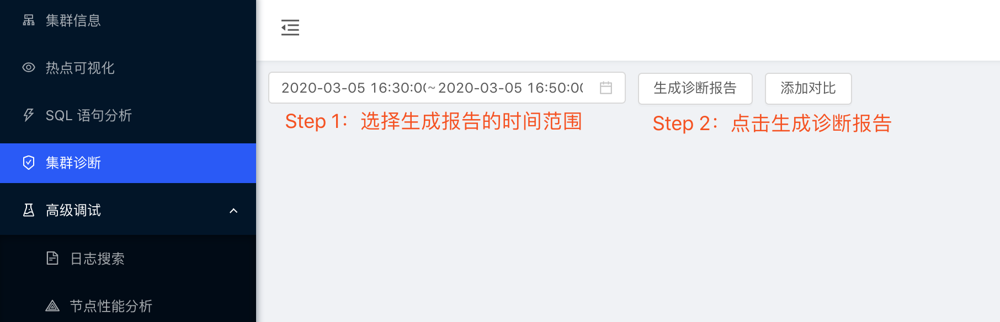
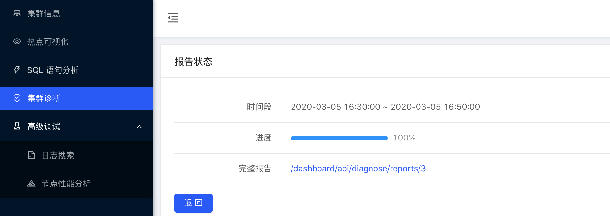
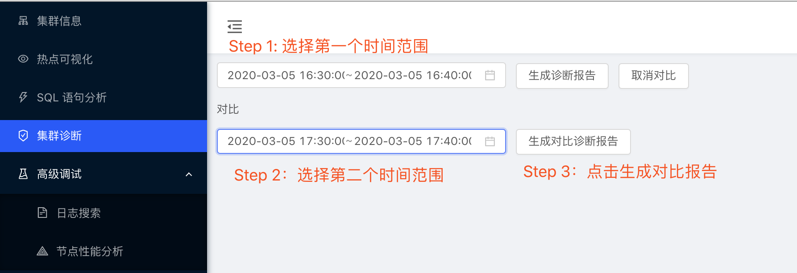
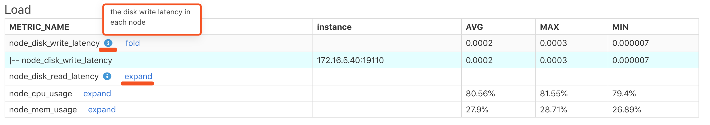

2.3 生成集群诊断报告
诊断报告全称是 诊断报告 + 系统报告。
诊断报告是指 TiDB 内置的诊断，对系统在某一时间范围内的状态做出的系统诊断以及自动系统巡检，将诊断结果汇总一个诊断报告表，帮助 DBA 发现集群潜在的问题。
系统报告包括集群的拓扑信息，机器的硬件信息，服务器以及各个组件的负载信息，各个组件的监控信息以及配置信息。
最终将诊断报告和系统报告生成一份 html 格式的报告，并支持下载离线浏览及传阅。
2.3.1 如何使用
1. 依赖
诊断报告需要读取监控数据，目前需要设置 PD 的 pd-server.metric-storage 值为 prometheus 的地址。可以通过下面命令动态设置改配置项。
curl -X POST -d '{"metric-storage":"http://{PROMETHEUS_ADDRESS}"}' http://{PD_ADDRESS}/pd/api/v1/config
示例：
curl -X POST -d '{"metric-storage":"http://127.0.0.1:9090"}' http://127.0.0.1:2379/pd/api/v1/config
2. 关于时间范围的选择
建议生成诊断报告的时间范围在 2 min ~ 60 min 内，目前不建议生成时间范围超过 1 小时的诊断报告。
3. 生成诊断报告并查看
点击完整报告的链接即可查看报告内容。


4. 生成对比诊断报告
对比两个诊断时间段的报告，要求 2 个时间段的跨度一样，比如 start 和 end 的时间差均为 10 分钟。

5. 提示
- i 图标：鼠标移动到 i 图标会显示每一行的说明注释。
- expand：点击 expand 展开会看到这项监控更加详细的信息，例如是哪个 instance, 哪个 label 等等。

2.3.2 自动诊断报告
自动诊断是 TiDB 的 4.0 引入的新特性，根据一些内置的诊断规则对系统做出诊断，这里具体可以参考下一章诊断系统表中的 INSPECTION_RESULT 诊断结果表，查看更详细的内容。
2.3.3 系统报告
1. Header
报告头，包括报告的时间范围，集群机器的硬件信息，集群拓扑。
(1) Report Time Range
生成报告的时间范围。
| START_TIME | END_TIME |
|---|---|
| 2020-03-05 16:30:00 | 2020-03-05 16:50:00 |
(2) cluster hardware
集群中服务器的硬件信息。
| HOST | INSTANCE | CPU_CORES | MEMORY (GB) | DISK (GB) | UPTIME (DAY) |
|---|---|---|---|---|---|
| 172.16.5.40 | tidb*1 tikv*4 pd*1 |
20/40 | 122.696 | sda3: 1465.187500 nvme0n1: 343.715603 sda1: 0.185237 | 253.14520396237572 |
- HOST： 服务器地址
- INSTANCE： 表示服务器上运行的组件。
tidb*1 tikv*4 pd*1表示这台服务器上运行着 1 个 TiDB 实例，4 个 TiKV 实例 以及 1 个 PD 实例 - CPU_CORES：CPU 核心数，逻辑核心 / 物理核心
- MEMORY：内存容量，单位是 GB
- DISK：磁盘容量，单位是 GB
- UPTIME: 服务器的启动时间，单位是 Day
(3) cluster info
集群拓扑信息，信息来自 TiDB 的 information_schema.cluster_info 系统表。
| TYPE | INSTANCE | STATUS_ADDRESS | VERSION | GIT_HASH | START_TIME | UPTIME |
|---|---|---|---|---|---|---|
| tidb | 172.16.5.40:4009 | 172.16.5.40:10089 | 5.7.25-TiDB-v4.0.0-beta-311-gd93c06149 | d93c061491d8094751a53c510bd8de886722952a | 2020-03-05T20:08:47+08:00 | 68h44m17.643278709s |
| pd | 172.16.5.40:24799 | 172.16.5.40:24799 | 4.1.0-alpha | 61d9f9cc35d3f191eb5e7ea1eb4f8e29eb73eda0 | 2020-03-06T11:34:18+08:00 | 53h18m46.643284098s |
| tikv | 172.16.5.40:21150 | 172.16.5.40:21151 | 4.1.0-alpha | 8fa0e059e14c3a1433fcb581452f9ea0a14a72ce | 2020-03-04T20:53:15+08:00 | 91h59m49.643285709s |
| tikv | 172.16.5.40:22150 | 172.16.5.40:22151 | 4.1.0-alpha | 8fa0e059e14c3a1433fcb581452f9ea0a14a72ce | 2020-03-04T20:53:50+08:00 | 91h59m14.643287479s |
| tikv | 172.16.5.40:23150 | 172.16.5.40:23151 | 4.1.0-alpha | 8fa0e059e14c3a1433fcb581452f9ea0a14a72ce | 2020-03-04T20:54:17+08:00 | 91h58m47.643289422s |
| tikv | 172.16.5.40:20150 | 172.16.5.40:20151 | 4.1.0-alpha | 8fa0e059e14c3a1433fcb581452f9ea0a14a72ce | 2020-03-04T20:45:24+08:00 | 92h7m40.643291283s |
2. Load info
(1) node load
服务器节点的负载信息，包括磁盘的读 / 写延迟，CPU、Memory 的 AVG、 MAX、 MIN 使用率。
| METRIC_NAME | instance | AVG | MAX | MIN |
|---|---|---|---|---|
| node_disk_write_latency | 0.0002 | 0.0003 | 0.000007 | |
| node_disk_read_latency | ||||
| node_cpu_usage | 80.56% | 81.55% | 79.4% | |
| node_mem_usage | 27.9% | 28.71% | 26.89% |
(2) process cpu usage
各个 TiDB / PD / TiKV 组件的 CPU 的 AVG、 MAX、 MIN 使用率。
| instance | job | AVG | MAX | MIN |
|---|---|---|---|---|
| 172.16.5.40:10089 | tidb | 18.38 | 19.16 | 17.76 |
| 172.16.5.40:20151 | tikv | 9.68 | 10.03 | 9.42 |
| 172.16.5.40:24799 | pd | 0.6 | 0.63 | 0.56 |
| 172.16.5.40:22151 | tikv | 0.36 | 1.08 | 0.04 |
| 172.16.5.40:23151 | tikv | 0.3 | 1.07 | 0.04 |
| 172.16.5.40:21151 | tikv | 0.27 | 0.71 | 0.04 |
(3) TiKV Thread CPU Usage
查看 TiKV 各个线程的 CPU 使用率。
| METRIC_NAME | instance | AVG | MAX | MIN | |
|---|---|---|---|---|---|
| raftstore fold>) | 0.01 | 0.06 | 0 | ||
| \ | -- raftstore | 172.16.5.40:20151 | 0.06 | 0.06 | 0.05 |
| \ | -- raftstore | 172.16.5.40:22151 | 0.00003 | 0.0002 | 0 |
| \ | -- raftstore | 172.16.5.40:23151 | 0 | 0 | 0 |
| \ | -- raftstore | 172.16.5.40:21151 | 0 | 0 | 0 |
| apply expand>) | 0 | 0 | 0 | ||
| sched_worker expand>) | 0 | 0 | 0 | ||
| snap expand>) | 0.000002 | 0.0002 | 0 | ||
| cop expand>) | 0.01 | 0.18 | 0 | ||
| grpc expand>) | 0.16 | 0.85 | 0 |
(4) goroutines count
TiDB / PD 组件的 goroutines 的 AVG、 MAX、 MIN 数量信息。
| instance | job | AVG | MAX | MIN |
|---|---|---|---|---|
| 172.16.5.40:10089 | tidb | 899 | 996 | 651 |
| 172.16.5.40:24799 | pd | 114 | 115 | 113 |
3. Overview
(1) Time Consume
包括集群总体各项监控耗时以及各项耗时的占比。
| METRIC_NAME | LABEL | TIME_RATIO | TOTAL_TIME | TOTAL_COUNT | P999 | P99 | P90 | P80 |
|---|---|---|---|---|---|---|---|---|
| tidb_query expand>) | 1 | 184598.05 | 9467997 | 0.4 | 0.12 | 0.05 | 0.03 | |
| tidb_get_token expand>) | 0.00007 | 12.1 | 9467600 | 0.0002 | 0.000001 | 0.000001 | 0.000001 | |
| tidb_parse expand>) | 0.000007 | 1.23 | 3593 | 0.04 | 0.008 | 0.0009 | 0.0005 | |
| tidb_compile expand>) | 0.00001 | 1.82 | 3593 | 0.04 | 0.03 | 0.004 | 0.002 | |
| tidb_execute expand>) | 0.000007 | 1.26 | 3593 | 0.2 | 0.17 | 0.008 | 0.001 | |
| tidb_distsql_execution expand>) | 0.0003 | 56.72 | 1953 | 1.41 | 0.5 | 0.05 | 0.03 | |
| tidb_cop expand>) | 0.001 | 206.21 | 2756 | 2.01 | 1.66 | 0.42 | 0.16 | |
| tidb_transaction expand>) | 0.09 | 15920.8 | 9456815 | 0.49 | 0.06 | 0.02 | 0.008 |
- METRIC_NAME：该项监控项的名称
- LABEL：该项监控的 LABEL 信息，点击 expand 后可以查看该项监控更加详细的各项 LABEL 的监控信息。
TIME_RATIO：该项监控消耗的总时间和 TIME_RATIO 为 1 的监控行总时间比例
例如 tidb_cop 的总耗时占 tidb_query 总耗时的 0.001 秒- TOTAL_TIME：该项监控的总耗时
- TOTAL_COUNT： 该项监控执行的总次数
- P999： 该项监控的 P999 最大执行时间
- P99：该项监控的 P99 最大执行时间
- P90：该项监控的 P90 最大执行时间
- P80：该项监控的 P80 最大执行时间
(2) Error
集群内各种 error 出现的总次数。
| METRIC_NAME | LABEL | TOTAL_COUNT | |
|---|---|---|---|
| tidb_binlog_error_total_count | 0 | ||
| tidb_handshake_error_total_count | 0 | ||
| tidb_transaction_retry_error_total_count | |||
| tidb_kv_region_error_total_count fold>) | 739 | ||
| \ | -- tidb_kv_region_error_total_count | not_leader | 481 |
| \ | -- tidb_kv_region_error_total_count | stale_command | 256 |
| \ | -- tidb_kv_region_error_total_count | epoch_not_match | 1 |
| tidb_schema_lease_error_total_count | |||
| tikv_grpc_error_total_count | |||
| tikv_critical_error_total_count | |||
| tikv_scheduler_is_busy_total_count | |||
| tikv_channel_full_total_count | |||
| tikv_coprocessor_request_error_total_count fold>) | 8 | ||
| \ | -- tikv_coprocessor_request_error_total_count | meet_lock | 7 |
| \ | -- tikv_coprocessor_request_error_total_count | not_leader | 1 |
| tikv_engine_write_stall | 0 | ||
| tikv_server_report_failures_total_count | 0 | ||
| tikv_storage_async_request_error fold>) | 793 | ||
| \ | -- tikv_storage_async_request_error | snapshot | 793 |
| tikv_lock_manager_detect_error_total_count | 0 | ||
| tikv_backup_errors_total_count | |||
| node_network_in_errors_total_count | 0 | ||
| node_network_out_errors_total_count | 0 |
4. TiDB
TiDB 组件相关的监控信息。
(1) Time Consume
TiDB 的各项监控耗时以及各项耗时的占比。与 Overview 中类似，并且 label 信息会更丰富，可以看到更多细节。
(2) Transaction
TiDB 事务相关的监控项。
| METRIC_NAME | LABEL | TOTAL_VALUE | TOTAL_COUNT | P999 | P99 | P90 | P80 |
|---|---|---|---|---|---|---|---|
| tidb_transaction_retry_num | 0 | 0 | 0 | 0 | 0 | 0 | |
| tidb_transaction_statement_num expand>) | 17524099 | 17500676 | 511 | 501 | 398 | 284 | |
| tidb_txn_region_num expand>) | 900385 | 900095 | 4 | 1 | 1 | 1 | |
| tidb_txn_kv_write_num expand>) | 658293 | 1379 | 1023 | 1011 | 896 | 768 | |
| tidb_txn_kv_write_size expand>) | 216307980 | 1379 | 1043333 | 996147 | 248705 | 235266 | |
| tidb_load_safepoint_total_num expand>) | 67 | ||||||
| tidb_lock_resolver_total_num expand>) | 40 |
- TOTAL_VALUE： 该项监控在报告时间段内所有值的和
- TOTAL_COUNT：该项监控出现的总次数
- P999： 该项监控的 P999 最大值
- P99：该项监控的 P99 最大值
- P90：该项监控的 P90 最大值
- P80：该项监控的 P80 最大值
示例：
在报告时间范围内，tidb_txn_kv_write_size：一共有 1379 次事务的 kv 写入，总 kv 写入大小是 216307980， 其中 P999、P99、P90、P80 的最大值分别为 1043333、996147、248705、235266，单位是 byte。
(3) DDL-owner
TiDB DDL 的 owner 信息。
| MIN_TIME | DDL OWNER |
|---|---|
| 2020-03-05 16:30:00 | 172.16.5.40:10089 |
注意：
如果 owner 信息为空，不代表这个时间段内一定没有 owner。因为 TiDB 依据
ddl_worker的监控信息来判断 DDL owner，所以也可能由于这个时间段内ddl_worker没有做任何 DDL job， 导致 owner 信息为空。
5. PD / TiKV
PD 和 TiKV 的监控报告与之前的表结构类似，这里不再重复赘述，点击 i 图标查看相关注释查看更多信息即可。
6. Config
(1) Scheduler Config
PD Scheduler 配置参数的 change history
| MIN_TIME | CONFIG_ITEM | VALUE | CHANGE_COUNT |
|---|---|---|---|
| 2020-03-05 16:30:00.000000 | enable-makeup-replica | 1 | 1 |
| 2020-03-05 16:30:00.000000 | enable-remove-down-replica | 1 | 1 |
| 2020-03-05 16:30:00.000000 | enable-remove-extra-replica | 1 | 1 |
| 2020-03-05 16:30:00.000000 | enable-replace-offline-replica | 1 | 1 |
| 2020-03-05 16:30:00.000000 | high-space-ratio | 0.6 | 1 |
| 2020-03-05 16:30:00.000000 | hot-region-cache-hits-threshold | 3 | 1 |
| 2020-03-05 16:30:00.000000 | hot-region-schedule-limit | 4 | 1 |
| 2020-03-05 16:30:00.000000 | leader-schedule-limit | 4 | 2 |
| 2020-03-05 16:46:00.000000 | leader-schedule-limit | 8 | 2 |
| 2020-03-05 16:30:00.000000 | low-space-ratio | 0.8 | 1 |
| 2020-03-05 16:30:00.000000 | max-merge-region-keys | 200000 | 1 |
| 2020-03-05 16:30:00.000000 | max-merge-region-size | 20 | 1 |
| 2020-03-05 16:30:00.000000 | max-pending-peer-count | 16 | 1 |
| 2020-03-05 16:30:00.000000 | max-replicas | 3 | 1 |
| 2020-03-05 16:30:00.000000 | max-snapshot-count | 3 | 1 |
| 2020-03-05 16:30:00.000000 | merge-schedule-limit | 8 | 1 |
| 2020-03-05 16:30:00.000000 | region-schedule-limit | 2048 | 1 |
| 2020-03-05 16:30:00.000000 | replica-schedule-limit | 64 | 1 |
| 2020-03-05 16:30:00.000000 | store-balance-rate | 15 | 1 |
| 2020-03-05 16:30:00.000000 | tolerant-size-ratio | 0 | 1 |
- MIN_TIME： 在报告时间范围内监控项生效的最小时间
- CONFIG_ITEM：配置项的名称
- VALUE：配置项的值
- CHANGE_COUNT：配置项在报告时间范围内被修改的次数
示例，上面报告中，leader-schedule-limit 配置参数有过修改
2020-03-05 16:30:00，
leader-schedule-limit的配置值为 42020-03-05 16:46:00，
leader-schedule-limit的配置值为 8，说明该配置的值在 2020-03-05 16:46:00 修改
注意：
由于拉取监控信息的延迟，上面
leader-schedule-limit的修改时间可能要比 2020-03-05 16:46:00 早几秒，但延迟不会超过 prometheus 拉取监控的间隔时间。
(2) TiDB GC Config
TiDB 的 GC 配置参数的 change history
| MIN_TIME | CONFIG_ITEM | VALUE | CHANGE_COUNT |
|---|---|---|---|
| 2020-03-03 17:00:00.000000 | tikv_gc_life_time | 6000 | 1 |
| 2020-03-03 17:00:00.000000 | tikv_gc_run_interval | 60 | 1 |
(3) TiDB / PD / TiKV Current Config
该表的数据来源是 TiDB 的 information_schema.cluster_config 系统表。
注意：
current Config 是指生成报告时集群当前的配置值，不是用户选择的报告时间范围内的值。